Análisis con
SExtractor + PSFEx
SExtractor es una herramienta para el análisis de imágenes astronómicas, crea un catálogo de objetos a partir de estas imágenes. Este software puede procesar imágenes de gran tamaño y manejar una gran variedad de magnitudes de objetos. Por su parte, PSFEx es un software que permite modelar la función de dispersión puntual (PSF) a partir de una imagen astronómica. La PSF describe cómo un sistema óptico-detector responde a una fuente puntual de luz, como una estrella. La combinación de ambos programas permite realizar un análisis más completo y preciso de las imágenes astronómicas.
Instalación de SExtractor
Para instalar SExtractor desde el paquete fuente de GitHub , primero se tiene que descomprimir el archivo. En el nuevo directorio ejecutamos el comando:
$ sh autogen.shEsto crea un archivo de configuración que se utiliza para compilar SExtractor. Ahora ejecutamos el comando:
$ ./configureFinalmente, ejecutamos el comando:
$ makePara comprobar que el software se ha instalado correctamente escribimos en la terminal:
$ sexEsto devolverá información básica sobre SExtractor. Para más detalles sobre la instalación se pueden consultar las siguientes fuentes:
¿Cómo trabaja SExtractor
En general, para hacer uso de SExtractor, se siguien los siguientes pasos:
- Identificar y medir el nivel de fondo (Background).
- Aplicar un umbral a la imagen respecto al fondo.
- Localizar y separar fuentes que aparecen por encima del umbral.
- Producir un catálogo de fuentes y sus propiedades medidas.

Para usar SExtractor se necesita una imagen en formato FITS. Se puede descargar una imagen de ejemplo desde el siguiente enlace .
La imagen que utilizaremos tendrá el nombre de
IMAGEN.fits.

Para hacer uso de SExtractor se necesitan 3 archivos de configuración que vienen por defecto en el paquete fuente de SExtractor

Archivos principales de configuración
-
default.sexes el corazón de SExtractor. Contiene los parámetros globales del análisis; aquí se define el nivel de detección, el nombre del catálogo de salida y otros parámetros importantes. -
default.paramcontiene la lista de parámetros que SExtractor medirá durante el análisis. SExtractor posee muchas propiedades observacionales disponibles. -
default.convcontiene el filtro de convolución utilizado para mejorar la detección de objetos. -
default.nnwcorresponde al archivo de red neuronal utilizado para la clasificación estrella-galaxia.

default.sex, aquí se definen los parámetros globales del análisis.

default.param, aquí se definen los parámetros que SExtractor medirá.
Parámetros de entrada.
SExtractor obtiene información del encabezado de la imagen FITS, sin embargo, muchos de los parámetros se deben ser especificados en el archivo default.sex. Los parámetros que están por defecto pueden ser listados con el comando sex -d
Información de la imagen.
-
GAIN: Representa la ganancia del detector, es decir, la relación entre los electrones generados en el CCD y las cuentas digitales ADU almacenadas en la imagen. Se expresa en $$\text{GAIN}=\frac{\text{electrones}}{\text{ADU}}$$ -
MAG_GAMMA: Este parámetro se empleaba cuando SExtractor se aplicaba a placas fotográficas en donde esta es la pendiente de la función de respuesta de la emulsión utilizada en las placas en cuestión. -
DETECT_TYPE: Especifica el tipo de imagen que se va a analizar, puede serCCDoPHOTO, dependiendo del tipo de imagen que se tenga, se deben ajustar otros parámetros como elGAINy elMAG_GAMMA. -
MAG_ZEROPOINT: Es el punto cero para la escala de magnitudes, que se utiliza para convertir las cuentas en magnitudes absolutas. -
PIXEL_SCALE: Es la escala del pixel en arcsegundos por pixel, que se utiliza para convertir las coordenadas de los objetos en unidades de ángulo, es decir, que tanto del cielo hay en un pixel. Este es un parámetro importante para la clasificación estrella-galaxia, y que con suerte se puede obtener del encabezado de la imagen. -
SATUR_LEVEL: Es el nivel de saturación del detector, que se utiliza para identificar objetos saturados en la imagen. Este valor también se puede obtener del encabezado de la imagen. -
SEEING_FWHM: Representa el Full Width at Half Maximum expresado en segundos de arco. Este parámetro constituye una de las calibraciones iniciales del análisis, ya que proporciona a SExtractor una estimación del tamaño aparente de las fuentes puntuales en la imagen. Este valor es utilizado principalmente en la clasificación estrella-galaxia mediante el parámetroCLASS_STAR.
Físicamente el seeing describe cuanto se ensanchan las imágenes de las estrellas debido principalmente a la turbulencia atmosférica. Si una estrella fuera una funente puntual perfecta, la atmósfera y la óptica del telescopio la transformarían en una distribución extendida de luz. Esta distribución se le conoce como la función de dispersión puntal (point spread function, PSF), la cual describe cómo un punto luminoso ideal es registrado por el sistema de observación, en muchos casos la PSF puede aproximarse a una distribución gaussiana. El parámetroFWHMmide el ancho de esta distribución a la mitad de su intensidad máxima.
Determinación del fondo (Background).
En una imagen astronómica, el valor que se mide en un píxel es la suma de la luz de los objetos que nos interesan (estrellas, galaxias, etc.) y una señal de "fondo" que proviene del cielo. SExtractor crea un mapa de fondo que representa este valor en cualquier posición de la imagen, para poder restarlo y trabajar solo con el flujo de las fuentes.
El algoritmo se desglosa en los siguientes pasos:
-
SExtractor divide la imagen en una cuadrícula de mallas, el tamaño de estas mallas se define con el parámetro
BACK_SIZE. Para cada celda de esta cuadrícula, se analizan los píxeles que contiene de forma independiente. -
Para cada cuadrícula, SExtractor construye un histograma con los valores de los píxeles y aplica un proceso iterativo de recorte $\kappa\sigma$ (kappa-sigma clipping) para eliminar la luz de las fuentes.
- Recorte iterativo: Se calcula la mediana y la desviación estándar ($\sigma$) de los píxeles en la celda. Luego, se descartan todos los píxeles que están a más de $\pm3\sigma$ de la mediana y se recalcula la mediana y $\sigma$ con los píxeles restantes. Este proceso se repite hasta que los valores convergen. Esto asegura que los píxeles brillantes de las estrellas no contaminen la estimación del fondo.
- Una vez que se tiene la distribución de píxeles "limpia", se estima la moda (el valor más frecuente). SExtractor utiliza una relación empírica para estimar la moda a partir de la mediana y la media de la distribución recortada. $$\text{Moda}= 2.5 \times \text{Mediana} - 1.5 \times \text{Media}$$
-
Después, ya que se tiene un valor de fondo para cada celda de la cuadrícula, se aplica un filtro mediana de tamaño
BACK_FILTERSIZEsobre la rejilla. Esto ayuda a eliminar sobreestimaciones del fondo causadas por estrellas muy brillantes. - Finalmente, SExtractor interpola los valores de la rejilla filtrada utilizando una bicubic-spline para generar un mapa de fondo continuo que tenga el mismo tamaño que la imagen original. Este mapa de fondo se puede restar de la imagen original para obtener una imagen con el fondo corregido.
BACKPHOTO_TYPE a LOCAL y se elije un BACKPHOTO_THICK.
-
BACKPHOTO_TYPE: Indica qué fondo utilizar cuando SExtractor calcula el flujo de un objeto. Puede tener valores deGLOBALoLOCAL.-
GLOBAL: SExtractor utiliza el mapa de fondo global para restar el fondo de la imagen. Este es el método por defecto y es adecuado para la mayoría de las imágenes, especialmente aquellas con un fondo uniforme. -
LOCAL: SExtractor calcula un fondo local para cada objeto utilizando una corona alrededor del objeto. El tamaño de esta corona se define con el parámetroBACKPHOTO_THICK. Este método es útil para imágenes con un fondo no uniforme o con gradientes de fondo, ya que permite una estimación más precisa del fondo en las proximidades de cada objeto.
-
Umbralización.
SExtractor detecta objetos en la imagen comparando el valor de cada píxel con un umbral definido por el usuario. Este umbral se establece en términos de la desviación estándar del fondo, y se define con los parámetros DETECT_THRESH y ANALYSIS_THRESH. Los píxeles que superan este umbral se consideran parte de un objeto.
-
DETECT_THRESH: Define el umbral de detección en unidades de desviación estándar del ruido de fondo ($\sigma$). Por ejemplo, un valor de 1.5 significa que SExtractor considerará como parte de un objeto a todos los píxeles que estén a 1.5 veces la desviación estándar por encima del fondo.
Posteriormente a que SExtractor estima y sustrae el fondo de la imagen, calcula el ruido asociado al fondo, luego, compara la intencidad de cada píxel con el umbral seleccionado:
$$I_{pixel} > \text{BACKGROUND}+(\text{DETECT_THRESH})\sigma$$Todos aquellos píxeles que superan el umbral son marcados como candidatos a pertenecer a un objeto. En [2] el autor menciona 3 requisitos para un objeto candidato:
- Todos los píxeles esta por encima del
DETECT_THRESH. - Todos estos píxeles son adyacentes entre sí (con esquinas o lados en común).
- Hay más de un número mínimo de píxeles (especificado por el parámetro
DETECT_MINAREA).
-
ANALYSIS_THRESH: Define un umbral de brillo que un píxel debe superar para ser considerado en las mediciones del objeto, como el cálculo de su forma (FWHM), brillo superficial, o flujo total. SExtractor identifica un objeto empleando el umbral de detección (DETECT_THRESH). Luego, para medir sus propiedades, utiliza todos los píxeles conectados que superen este segundo umbral (más bajo o igual) -
DETECT_MINAREA: Este parámetro establece el número mínimo de píxeles conectados y contiguos que deben superar el umbral de detección para que SExtractor los considere objetos. Este parámetro actúa como un filtro de tamaño para eliminar detecciones espurias causadas por píxeles de ruido aislado
El flujo de trabajo para esta parte podemos resumirla de la siguiente manera:
-
Filtrado y umbralización: SExtractor analiza los píxeles de la imagen y marca todos aquellos que superan el nivel establecido por
DETECT_THRESH. - Agrupación: Los píxeles marcados que están conectados entre sí (tocándose por los lados o las esquinas) se agrupan en "islas" o regiones candidatas a ser objetos.
-
Aplicación de
DETECT_MINAREA: SExtractor examina cada una de las "islas" y si el número total de píxeles que la componen es menor que el valor deDETECT_MINAREA, la isla es descartada como una detección espuria. -
Medición con
ANALYSIS_THRESH: Finalmente, para las islas que sobreviven al filtro de tamaño (aquellas que si son objetos), SExtractor realiza las mediciones. Para definir el área exacta sobre la cual medir el flujo, utiliza el segundo umbralANALYSIS_THRESH.
Filtrado
Antes de hacer la umbralización de píxeles, se puede aplicar un filtro el cual, esencialmente, suaviza la imagen. Aplicar este filtro puede ayudar a detectar objetos débiles y extendidos. Hay cuatro tipos de filtros que se puede aplicar: Gaussiano, sombrero Mexicano (Mexican hat), sombrero de copa (tophat) y funcion de bloque de varios tamaños y normalizados. Dentro del directorio de SExtractor el archivo README explica estos tipos de filtrados de la siguiente manera:[2]
| Nombre | Descripción |
|---|---|
| default.conv | pequeña función piramidal |
| gauss*.conv | conjunto de funciones gausianas, para FWHMs de seeing de entre 1.5 y 5 píxeles (ideal para detección de objetos débiles). |
| tophat*.conv | conjunto de funciones "top-hat". Se usan para detectar objetos extendidos, de bajo brillo superficial, con un umbral muy bajo. |
| mexhat*.conv | "wavelents", produciendo un filtrado de banda pasante de la imagen, ajustado para FWHMs con un seeing entre 1.5 y 5 píxeles. Es útil para campos estelares muy poblados, sin embargo, necesita un umbral muy alto |
| block_3x3.conv | una pequeña función de "bloque" (para imágenes rebinadas como las del estudio DENIS). |
La forma en que estan nombrados los filtros normalmente parece tener la forma de name_seeingFWHM_size.conv
Deblending: separación en diferentes objetos
Con el método anterior para detectar objetos, se necesita hacer una separación de objetos vecinos que han sido extraídos como una sola fuente. [3]
"Se ha puesto gran cuidado en el diseño de la rutina de deblending para objetos fusionados. En muchas imágenes astronómicas, SExtractor debe tratar simultáneamente con objetos brillantes y extensos, como galaxias (que deben considerarse entidades individuales), y con pares o grupos de galaxias ópticamente débiles e interactuantes (que deben considerarse objetos separados). Tradicionalmente, este es un punto en el que muchos programas de extracción fallan, produciendo catálogos que contienen galaxias extendidas divididas en varias detecciones más pequeñas."[3]
El algoritmo de deblending de SExtractor se basa en una técnica de multiumbralización en la que se identifican diferentes picos de brillo dentro de una misma región detectada. Este proceso se controla mediante los parámetro DEBLEND_NTHRESH y DEBLEND_MINCONT. [3]
Podemos describir el proceso del algoritmo de la siguiente manera:
-
Detección inicial: Se identifica el conjunto de píxeles conectados que superen el umbral de detección dado por
DETECT_THRESH. - Análisis de la estructura: SExtractor analiza la estructura interna, en lugar de asumir que toda la "isla" es un solo objeto.
-
Aplicación de sub-umbrales: Se aplican una serie de umbrales de brillo decrecientes, comenzando desde el valor más alto dentro de la isla y descendiendo hasta el nivel definido por
DETECT_THRESH. El número de sub-umbrales se define con el parámetroDEBLEND_NTHRESH, un valor típico para este parámetro suele ser de 32 - Construcción del árbol de mezcla: En cada sub-umbral se identifican grupos de píxeles que quedan aislados. Cuando el umbral desciende, estos grupos se conectan lo que forma una estructura jerárquica que se asemeja a un árbol o un dendograma (ver la imágen siguiente). Este proceso muestra que picos de brillo están anidados dentro de otros más brillantes.
-
Evaluación del contraste: Finalmente, se analiza el "árbol de mezcla" para decidir cuándo un pico de brillo es suficientemente significativo como para ser considerado un objeto separado. Esta decisión se basa en el parámetro
DEBLEND_MINCONT
Entonces, los dos parámetros escenciales son DEBLEND_NTHRESH y DEBLEND_MINCONT
-
DEBLEND_NTHRESH: Define los niveles de brillo que se usan para construir el árbol, por ejemplo,DEBLEND_NTHRESH=32significa que se va a analizar el objeto con 32 niveles de intensidad distintos. -
DEBLEND_MINCONT: Básicamente controla que tan importante debe ser una rama para ser considerada un objeto independiente. Matemáticamente: $$\frac{F_{\text{rama}}}{F_{\text{total}}}>\alpha_c$$ En donde $F_{\text{rama}}$ es el flujo de la rama, $F_{\text{total}}$ es el flujo del objeto completo y $\alpha_c$ es el parámetroDEBLEND_MINCONT. Por ejemplo, supongamos que tenemos uun flujo total de $F_{\text{total}}=10000$ y una rama tiene $F_{\text{rama}}=3000$, entonces: $$\frac{3000}{10000}=0.3$$ SiDEBLEND_MINCONT=0.005, como $0.3>0.005$ la rama se considera un objeto independiente.

Cuando SExtractor detecta una fuente mediante el umbral principal determinado por el parámetro DETECT_THRESH, todo lo que está por encima de este umbral se considera inicialmente un único objeto, hasta ahora SExtractor no sabe todavía si son varios objetos. En la figura anterior, esto corresponde a toda la región que vemos sombreada.
Las líneas horizontales punteadas representan los niveles de brillo que SExtractor analiza, estos niveles están controlados por DEBLEND_NTHRESH. SExtractor comienza analizando los niveles más altos de intensidad, en la figura podemos ver pequeños máximos, de los cuales cada uno puede ser potencialmente una fuente independiente.
En la figura tenemos una región etiquetada como A que posee tres picos, primero aparecen tres máximos separados. Más abajo, estos máximos se unen y finalmente toda la estructura forma una única región. Para la región B que contiene dos máximos de nuevo SExtractor evalúa si debe separarlos o no. Cuando dos ramas se unen SExtractor calcula el flujo de cada una, que es el mismo ejemplo que se menciono antes.
En la siguiente imagen, tomada de la referencia [4], podemos ver la salida obtenida para dos valores distintos de DEBLEND_MINCONT
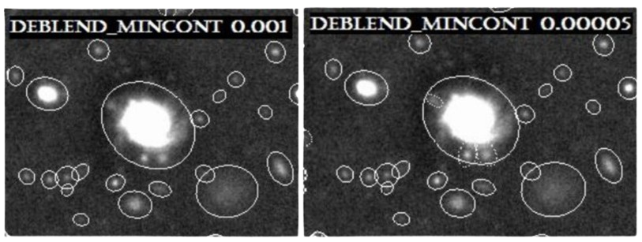
DEBLEND_MINCONT en la separación de objetos. A la izquierda, con un valor de 0.005, se separan más objetos, mientras que a la derecha, con un valor de 0.1, se separan menos objetos. (Imagen tomada de [4])
Cleaning
Si hay una estrella o galaxia muy brillante, sus "alas" de luz (el halo o perfil de la PSF) pueden extenderse y elevar el nivel de fondo en una región grande de la imagen. Esto puede ocasionar que pequeños bultos de ruido superen el umbral de detección, creando detecciones falsas. EL proceso de Cleaning se diseño para detectar y eliminar estos "fantasmas" creados por otras fuentes más brillantes. El proceso con el que funciona se puede desglozar de la siguiente manera: [2][4][5]
- Tras la detección inicial, el algoritmo identifica los objetos que son suficientemente brillantes como para contaminar el entorno.
- Para cada uno de estos objetos brillantes capaces de contaminar el entorno, SExtractor modela el perfil de luz, que según la documentación [2][4][5] para esta estimación se utiliza un perfil de Moffat $$\frac{I(r)}{I(\theta)} =\frac{1}{(1 + k \cdot r²)^\beta} $$ En donde $I(\theta)$ es el brillo central, $r$ es el radio, y $\beta$ es un parámetro que controla el ensanchamiento de las alas del perfil.
- El algoritmo calcula la contribución de la luz de las alas del perfil de Moffat en la ubicación de otros objetos cercanos y la sustrae de la imagen de detección. Posteriormente, para los objetos candidatos determina si seguiría siendo detectado sin la luz de su vecino brillante.[4][5]
Parámetros para cleaning:
-
CLEAN: (Y/N), determina si se activa o desactiva todo el proceso. -
CLEAN_PARAM: Ajusta la agresividad del proceso. Controla directamente el valor de $\beta$ en el perfil de Moffat. - Valores más bajos hacen que las alas del perfin de Moffat sean más brillantes, se eliminan más objetos (pudiendo eliminar algunos reales).
- Valores más altos producen un cleaning más conservador.
Point Spread Function (PSF, función de dispersión de punto)
Esta función describe cómo un sistema óptico-detector responde a una fuente puntual de luz. En términos sencillos, una estrella (que idealmente debería verse como un punto matemático) aparece en una imagen astronómica como una mancha extendida con un perfil de brillo característico, debido a los efectos de la atmósfera, las imperfecciones del telescopio, la difracción y las características del detector. Esa mancha es la PSF del sistema.
Es un elemento muy importante debido a que determina el tamaño aparente de las estrellas, influye en la separación de estrellas cercanas y permite distinguir fuentes puntuales de objetos extendidos. En observaciones desde la tierra, la forma que tiene la PSF está dominada por el seeing atmosférico, por ello, el parámetro SEEING_FWHM de SExtractor es un elemento importante.
Modelos analíticos de la PSF
Usualmente se usan varios modelos paramétricos para describir la PSF, estos suelen ser una Gaussiana, o una Lorentziana modificada, o una función de Moffat, u ocasionalmente la suma de una Gaussiana y una Lorentziana. De forma más simple, estas funciones son: [6]
-
Gaussiana
Este es el modelo más simple, con el perfil de brillo en función del radio $r$ igual a: $$G(r)=e^{-r^2/2\alpha^2}$$ -
Moffat
Fue propuesto por Moffat (1969), este modelo es más realista para perfiles limitados por el seeing: $$M(r)=\frac{1}{(1+r^2/\alpha^2)^\beta} $$ -
Lorentziana modificada
Este modelo es poco usado aun que específico para algunos casos. $$L(r)=\frac{1}{1+(r^2/\alpha^2)^\beta}$$
Más adelante en este análisis entraremos más en detalle en el uso de la PSF con el sofware de PSFEx, explicando desde como instalarlo, hasta como generar un modelo de PSF y como usarlo para obtener parámetros más precisos de los objetos detectados.
Uso de SExtractor
Parámetros iniciales
Ahora que se han explicado los parámetros del archivo principal de configuración default.sex, podemos empezar a usar SExtractor siguiendo los pasos mencionados al principio. Para empezar, creamos un directorio en donde guardaremos nuestra imagen y los archivos de configuración principales mencionados anteriormente. En este caso, el directorio tendra una carpeta para los aarchivos default, para la imagen y otra para las corridas que hagamos en SExtractor, además de tener un excel con todos los cambios que se haga a cada parámetro, todo lo anterior es opcional pero ayuda a mantener un orden en el análisis.
Antes de determinar el background de nuestra imagen, debemos que los parámetros sobre la información de la imagen sean correctos, esto es como si fueramos a hacer un experimento, antes de empezar con las mediciones debemos asegurarnos que las herramientas que vamos a emplear esten calibradas y funcionando correctamente. Para ello, debemos leer el encabezado de nuestra imagen en este caso se usó el software de SAOImageDS9 (también se puede leer el encabezado con ayuda de python).

Del encabezado podemos obtener algo de información que nos es útil, lo primero es notar que nuestra imagen proviene del DESI Legacy Survey que son un conjunto de proyectos astronómicos que fueron diseñados para capturar imágenes profundas de una gran región del cielo extragaláctico. [8]
Información básica de la imagen-
NAXIS1/NAXIS2=3600 x 3600: La imagen es de 3600 x 3600 píxeles - Imagen tipo coadd (imagen combinada/apilada de múltiples exposiciones).
Además, la versión del pipeline que se registró es LEGPIPEV=DR9.6.7
-
TELESCOP=CTIO 4.0-m telescope(Blanco telescope en Cerro Tololo, Chile) -
INSTRUME=DECam(Dark Energy Camera)
Finalmente, los parámetros que podemos obtener del header para configurar en nuestro archivo default.sex son los siguientes:
-
MAG_ZEROPOINT 22.5 -
CD1_1 = -7.27777777777778E-05 (deg/pix) CD2_2 = 7.27777777777778E-05 (deg/pix)Esto nos da la escala de placa (pixel scale), convertido a arcsec/pixel: $$7.27777778\times10^{-5}\times3600=0.262\ \text{arcsec/pix}$$
Además, investigando un poco encontramos que un valor típico SEEING_FWHM publicado por el DESI Legacy Survey ronda entre 1.0-1.3 arcsec, por lo que se tomaremos un valor de 1.2 arcsec como punto de partida y refinarlo posteriormente con parámetros que SExtractor nos proporciona. Por otra parte, para elegir nuestro filtro de convolución, tomamos nuestros valor de SEEING_FWHM y lo convertimos a píxeles:
$$\text{FWHM}_{\text{pxls}}=\frac{1.2}{0.262}=4.5$$
Por lo que usaremos el filtro gauss_4.0_7x7.conv.
Background
Después de hacer una configuración inicial a los parámetros, se puede empezar a determinar el background de la imagen, aquí entran en juego los parámetros BACK_SIZE y BACK_FILTERSIZE, en muchos artículos se menciona que para estos parámetros, valores más comunes son de 64 y 3 respectivamente [5] [6]. Para visualizar el background usaremos los parámetros CHECKIMAGE_TYPE y CHECKIMAGE_NAME que están en el archivo default.sex, para el primero tomaremos el valor de BACKGROUND y el segundo parámetro será para el nombre del archivo de salida, que en este caso será background.fits:

default.sex.
Con los parámetros configurados, en nuestra terminal vamos a posicionarnos en el directorio donde tenemos nuestra imagen y los archivos de configuración, y ejecutamos el siguiente comando:
$ sex IMAGEN.fits
Lo que nos generará dos archivos de salida, uno es el catálogo con el nombre que le dimos en el parámetro CATALOG_NAME y el otro archivo es la imagen del background con el nombre que le dimos en el parámetro CHECKIMAGE_NAME, este último podemos visualizarlo en DS9.

En la figura 10 podemos ver que el background obtenido está tomando algo de brillo de los objetos ubicados en la parte central de la imagen; en la imagen original se observa que corresponden a dos galaxias muy brillantes. Esto ocurre porque, con un BACK_SIZE relativamente pequeño, las celdas de la malla que caen sobre las galaxias no contienen suficientes píxeles de cielo puro, por lo que el algoritmo de sigma-clipping no logra excluir completamente su flujo, sobreestimando el background local en esa zona. Aumentar BACK_SIZE (o BACK_FILTERSIZE) puede mitigar este efecto, pero si se hace demasiado grande, el background se vuelve excesivamente suave y puede terminar absorbiendo objetos extendidos de bajo brillo superficial.
Vamos a verificar el resultado final de la sustracción poniendo como valor, en CHECKIMAGE_TYPE, -BACKGROUND; esto es la imagen original menos el mapa de background. Lo anterior nos devuelve la siguiente imagen .fits

En la figura 11 podemos ver una región más oscura justo sobre las dos galaxias centrales, lo cual evidencia una sobre-sustracción de flujo en esa zona; es decir, el background estimado ahí fue mayor al real. Una opción podría ser aumentar el tamaño de la malla, sin embargo, para este caso, se decidió mantener el tamaño de la malla y continuar con la detección de objetos.
Detección de objetos (Umbralización)
Lo siguiente es definir el umbral que SExtractor usará para detectar objetos, para este caso tomaremos el valor de DETECT_THRESH de 1.5 así como el valor de ANALYSIS_THRESH de 1.5, además de un valor de DETECT_MINAREA de 3 píxeles, y generaremos otro checkimage con el valor de APERTURES. Al correr SExtractor podemos visualizar lo siguiente en la terminal:
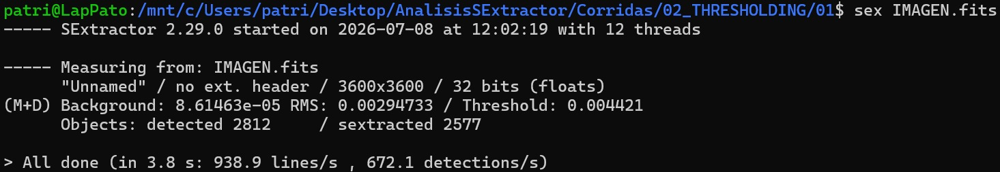
Podemos observar que el valor global del background es muy cercano a cero, además tenemos el valor de la desviación estándar del background, que es de 0.00294733 y con un umbral de detección de 0.004421. Por otra parte, podemos notar que SExtractor obtuvo 2812 objetos que superaron el umbral inicial de detección, de los cuales 2577 fueron considerados como objetos válidos después del proceso de deblending y cleaning (aún no se configuran estos parámetros, por lo que se toman los valores por defecto).
Ahora, usando la opción de CHECKIMAGE_TYPE con el valor de APERTURES, podemos visualizar los objetos detectados por SExtractor a los que se les dibuja un circulo o una elipse, esto es la apertura fotométrica.
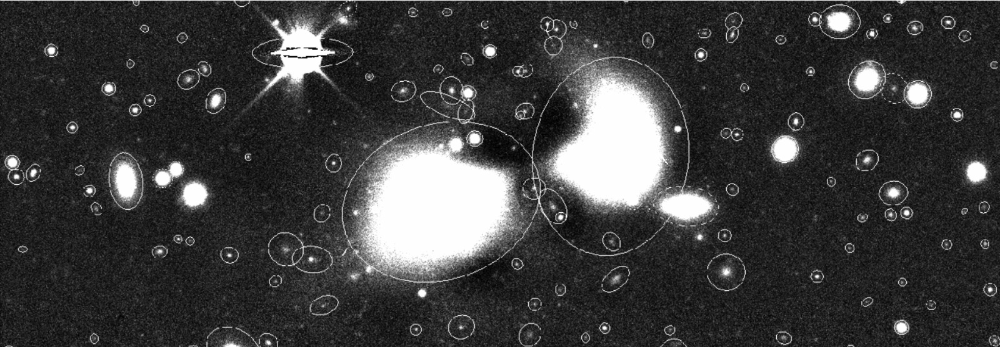

Deblending
Para el proceso de deblending, se tomará un valor de DEBLEND_NTHRESH de 32 y probaremos para 4 valores distintos de DEBLEND_MINCONT (0.0001,0.001, 0.005 y 0.01) para observar algun cambio en la detección de objetos.
| DEBLEND_MINCONT | Detected | Sextracted |
|---|---|---|
| 0.0001 | 2865 | 2626 |
| 0.001 | 2837 | 2598 |
| 0.005 | 2812 | 2577 |
| 0.01 | 2802 | 2569 |
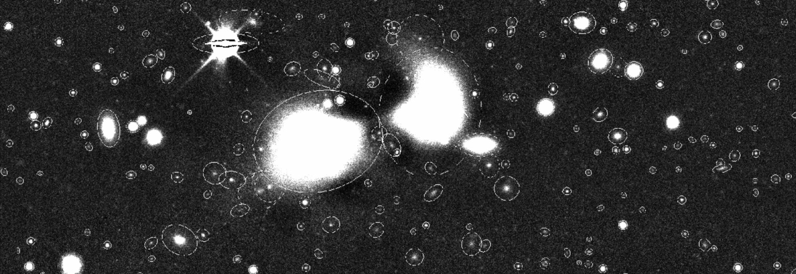
DEBLEND_MINCONT=0.0001
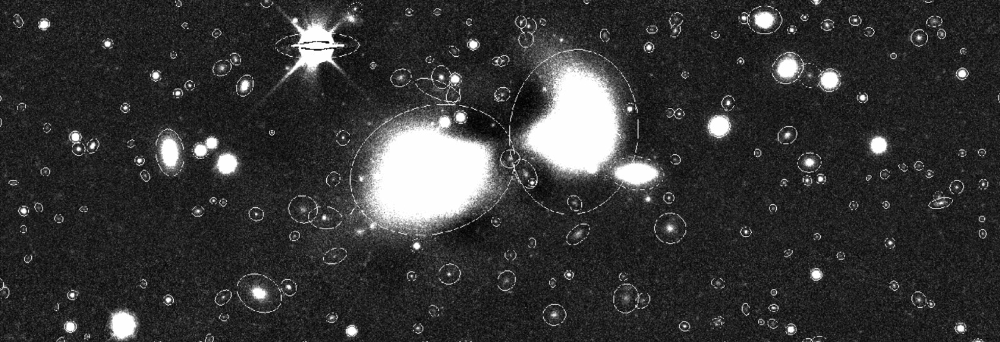
DEBLEND_MINCONT=0.001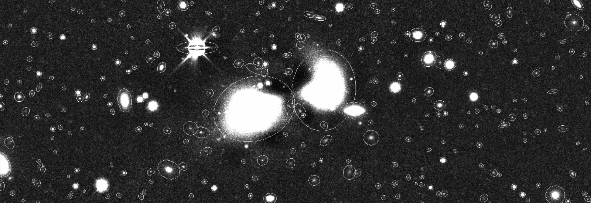
DEBLEND_MINCONT=0.005
DEBLEND_MINCONT=0.01DEBLEND_MINCONT. A medida que el valor aumenta, se detectan menos objetos, lo que indica una menor separación de fuentes cercanas. La imagen empleada es con el parámetro APERTURES.
La elección del valor para DEBLEND_MINCONT depende del objetivo del análisis, valores pequeños favorecen la separación de fuentes cercanas con gran diferencia de brillo, útiles para blends de galaxias como el observado en este campo, pero con riesgo de sobre-fragmentar objetos extendidos con estructura interna compleja. Valores más grandes son más conservadores, evitando divisiones espurias en galaxias con subestructura, pero corren el riesgo de no separar componentes reales de bajo contraste de brillo respecto a su vecino.
Para este caso, se optó por un valor de DEBLEND_MINCONT=0.005 que es un valor intermedio, con el proposito de separar las galaxias brillantes del centro de la imagen.
PSFEx (Point Spread Function Extractor)
PSFEx es una herramienta de software especializado en el procesamiento de imagenes astronómicas que crea modelos de funciones de dispersión de punto (PSF) a partir de imagenes previamente procesadas por SExtractor. [9][10]

Instalación de PSFEx
El proceso de instalación de PSFEx puede hacerse desde el código fuente de la siguiente manera:
- Clonación del repositorio
$ git clone https://github.com/astromatic/psfex.git
$ cd psfex- Configurar con autotools:
$ ./autogen.sh
$./configure- Compilar e instalar:
$ make
$ make install¿Cómo trabaja PSFEx?
-
Punto de partida: "Vignettes"
PSFEx no trabaja con la imagen completa, trabaja únicamente con los recortes que SExtractor extrajo al rededor de cada fuente (VIGNET). Cada vignette es una pequeña imagen centrada aproximadamente en el centroide de la fuente, con el fondo ya sustraído por SExtractor.
Esto es muy importante: PSFEx no vuelve a tocar la imagen original, todo el trabajo que realiza ocurre sobre los recortes, por ello, antes de usar esta herramienta, se debe tener un catálogo lo suficientemente bueno. [9][10] -
Selección de la muestra de entrenamiento
PSFEx decide cuáles de las vignettes corresponden realmente a estrellas puntuales, esto lo hace mediante el algoritmo deSAMPLE_AUTOSELECT: [9][10]- Construye un histograma de FWHM vs. magnitud de todas las fuentes.
- Busca la "moda"- el pico de densidad donde se concentran los objetos puntuales (las estrellas forman una línea vertical de FWHM constante en ese diagrama, mientras las galaxias se dispersan hacia FWHM mayores).
- Aplica los filtros que se configuran en el archivo principal (
SAMPLE_FWHMRANGE,SAMPLE_VARIABILITY,etc.) alrededor de la moda para obtener una muestra "limpia".
-
Normalización y remuestreo de cada estrella
Cada vignette que fue aceptada pasa por un preprocesamiento:-
Recentrado (
PSF_RECENTER): PSFEx re-estima el centroide de cada estrella con más precisión que el centroide inicial de SExtractor, típicamente ajustando un perfil analítico o usando momentos de la imagen, y desplaza la vignette para que quede perfectamente centrada en el píxel central. - Normalización de flujo: el flujo de cada estrella se normaliza para que sean comparables entre sí.
-
Remuestreo según
PSF_SAMPLING:si el modelo de PSF se va a construir a una resolución distinta de la imagen original, cada vignette se interpola a esa nueva grilla
-
Recentrado (
-
Construcción de la base del modelo
En esta etapa entraBASIS_TYPE, PSFEx necesita representar la forma del PSF con algún conjunto de funciones base:-
Si
BASIS_TYPE=PIXELoPIXEL_AUTO: cada píxel del modelo se trata como un parámetro libre independiente. Es decir, la "base" son literalmente funciones delta en cada posición del píxel del stamp del modelo. -
Si
BASIS_TYPE= GAUSS_LAGUERRE: en vez de píxeles independientes, usa un conjunto de funciones anal+iticas ortogonales, esto regulariza naturalmente el modelo, dando resultados más suaves con menos estrellas. -
BASIS_NUMBERcontrola cuántos elementos de esa base se usan.
-
Si
-
El ajuste usando mínimos cuadrados con variabilidad espacial
PSFEx no ajusta un PSF por estrella y luego promedia, ajusta un modelo global que depende simultáneamente de:- La posición del píxel dentro del stamp del PSF (u,v)
- La posición de la estrella en el campo de la imagen (X,Y)
PSFVAR_DEGREES: $$a_k(X,Y)=\sum_{i,j}c_{kij}\cdot X^iY^j$$ PSFEx resuelve todos estos coeficientes $c_{kij}$ simultáneamente planteando un sistema de mínimos cuadrados gigante: para cada estrella de la muestra (con su posición X,Y conocida y su vignette observada), la predicción del modelo debe acercarse lo más posible al valor observado en cada píxel, sumando el error de todas las estrellas y todos los píxeles a la vez. -
Iteración
El ajuste que hace PSFEx se hace de manera iterativa:- Ajusta el modelo con toda la muestra actual.
- Calcula el $\chi^2$ de cada estrella individual contra el modelo recién ajustado.
- Rechaza las estrellas con $\chi^2$ anormalmente alto.
- Vuelve a ajustar con la muestra depurada.
-
Salida final
El resultado de todo el proceso no es una imagen, es una tabla de coeficientes $c_{kij}$ guardada en formato FITS, contiene:- Los coeficientes de la base
- Los coeficientes polinomiales de variación espacial
- Metadatos de normalización
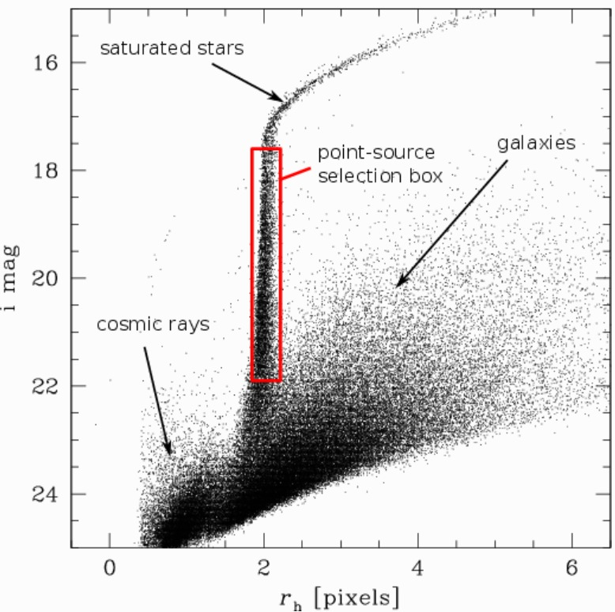
FLUX_RADIUS) vs. magnitud (imagen tomada de [9])
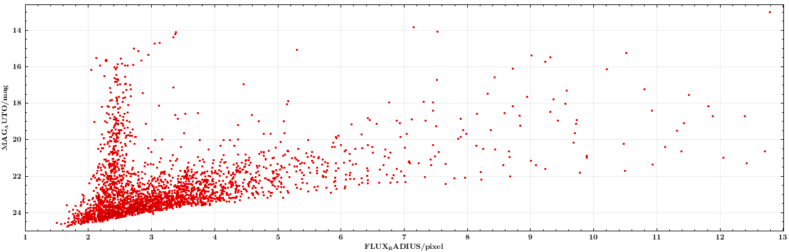
FLUX_RADIUS vs. magnitud MAG_AUTO obtenido a partir del catálogo generado por SExtractor
En la figura 18 podemos observar una similitud con el diagrama mostrado en la documentación de PSFEx. Las estrellas puntuales forman una secuencia estrecha con valores casi constantes de FLUX_RADIUS, lo que se conoce como locus estelar. PSFEx identifica automáticamente esta región para seleccionar las estrellas que serán utilizadas en la construcción del modelo del PSF. Los objetos con radios mayores corresponden principalmente a galaxias u otras fuentes extendidas.
Requisitos de entrada y parámetros de configuración clave
Esta herramienta no funciona directamente con imagenes como SExtractor, sino sobre catálogo que SExtractor genera, estos deben contener pequeñas subimágenes (VIGNET) para cada detección, además, estos catálogos deben estar en formato binario FITS_LDAC.[9][10]
Los parámetros que se deben configurar que son más importantes son los sigueintes:
| Parámetro | Por defecto | Objetivo |
|---|---|---|
PSF_SIZE |
25,25 | Dimensiones de los modelos PSF en píxeles |
PSF_SAMPLING |
0.0 | Paso de muestreo de los modelos PSF (0=automático) |
BASIS_TYPE |
BASIS_AUTO |
Vectores base para PSF (PIXEL,GAUSS_LAGUERRE,etc.) |
PSFVAR_KEYS |
X_IMAGE, Y_IMAGE |
La PSF depende de estos parámetros |
PSFVAR_GROUPS |
1,1 | Grupo polinómico para cada parámetro |
PSFVAR_DEGREES |
2 | Grado polinómico (0=PSF constante) |
SAMPLE_AUTOSELECT |
Y | Selección automática de fuentes puntuales |
SAMPLE_FWHMRANGE |
2.0,10.0 | Rango de FWHM de la fuente (píxeles) |
SAMPLE_MINSN |
20.0 | Relación señal/ruido mínima de la fuente |
CHECKIMAGE_TYPE |
Múltiple | Tipos de imágenes de chequeo a generar |
CHECKPLOT_TYPE |
Múltiple | Tipos de parcelas de control para generar |
WRITE_XML |
Y | Generar resumen XML |
Uso de PSFEx
Parámetros iniciales.
Para empezar a trabajar con PSFEx vamos a crear una carpeta nueva para SExtractor con la misma configuración con la que hemos trabajado. Ahora, el archivo donde estarán los parámetros le daremos el nombre de prepsfex.param, al cual agregaremos los siguientes parámetros:
X_IMAGE
Y_IMAGE
FLUX_RADIUS
FLUX_APER(1)
FLUXERR_APER(1)
ELONGATION
FLAGS
SNR_WIN
VIGNET(35,35)
El parámetro VIGNET(35,35) es crucial, ya que le indica a SExtractor que extraiga una viñeta de 35x35 píxeles para cada objeto. Además, debemos asegurarnos que el archivo de configuración principal (con el nombre de prepsfex.sex) nos de el catálogo en formato binario:

Vamos a explicar que hace cada parámetro que vamos a darle a SExtractor
-
X_IMAGE
Guarda la coordenada X de la posición del objeto en la imagen original, en píxeles. -
Y_IMAGE
Guarda la coordenada Y del objeto. -
FLUX_RADIUS
Mide el radio (en píxeles) que contiene el 50% del flujo total del objeto. Es el "radio de medio flujo". -
FLUX_APER(1)
Mide el flujo dentro de una apertura circular fija (el primero definido porPHOTOM_APERTURES). -
FLUXERR_APER(1)
Guarda la incertidumbre (error) del flujo medido en esa misma apertura. -
ELONGATION
Mide la elongación del objeto, esta definida como: $$1-\frac{B}{A}$$ donde $A$ y $B$ son los ejes mayor y menor de la elipse que mejor se ajusta al objeto. -
FLAGS
Es un número entero que codifica diversas advertencias sobre la calidad de la detección. -
SNR_WIN
Es la relación señal/ruido (Signal-to-Noise Ratio) calculada usando la ventana Gaussiana (WIN), que es más robusta que la SNR basada en apertura simple. -
VIGNET(35,35)Esta es el parámetro más importante para PSFEx. Este le ordena a SExtractor que extraiga una "viñeta" de 35x35 píxeles centrada exactamente en cada objeto detectado.
Finalmente corremos SExtractor con el archivo de configuración que se editó.
$ sex IMAGEN.fits -c prepsfex.sexComo lo hemos estado haciendo hasta ahora, esto nos generará un archivo que en nuestro caso será prepsfex.fits. Con el catálogo ya creado, vamos a empezar a usar PSFEx, creamos un directorio nuevo y creamos el archivo de configuración:
$ psfex -dd > default.psfexEsto nos genera el archivo de configuración que debemos editar para empezar a usar PSFEx:
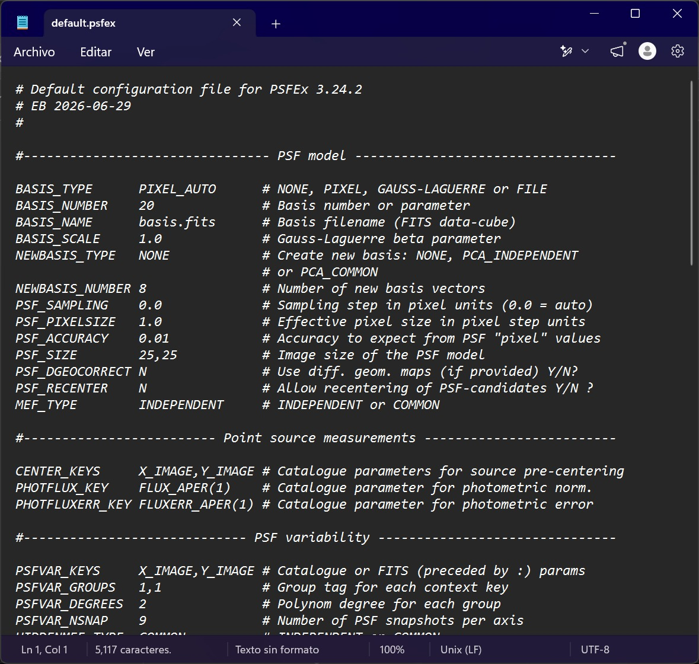
Parámetros clave a revisar
Selección de estrellas
SAMPLE_AUTOSELECT Y
SAMPLE_FWHMRANGE 2.0,10.0
SAMPLE_VARIABILITY 0.2
SAMPLE_MINSN 20
SAMPLE_MAXELLIP 0.3
Modelo del PSF
PSF_SAMPLING 0
PSF_SIZE 25,25
PSF_RECENTER Y
BASIS_TYPE PIXEL_AUTO
BASIS_NUMBER 20
Variabilidad espacial del PSF
PSFVAR_KEYS X_IMAGE,Y_IMAGE
PSFVAR_GROUPS 1,1
PSFVAR_DEGREES 2
Salidas de verificación
CHECKPLOT_TYPE FWHM,ELLIPTICITY
CHECKPLOT_NAME fwhm.png,ellipticity.png
CHECKIMAGE_TYPE CHI,PROTOTYPES,SAMPLES,RESIDUALS,SNAPSHOTS
CHECKIMAGE_NAME chi,proto,samp,resi,snapAntes de continuar, vamos a explicar un poco que son los parámetros que se mencionaron antes.
| Parámetro | Descripción |
|---|---|
SAMPLE_AUTOSELECT (Y/N) |
Le dice a PSFEx si debe seleccionar automáticamente qué fuentes del catálogo son estrellas válidas para construir el modela de PSF. |
SAMPLE_FWHMRANGE (mínimo,máximo) |
Determina el rango de FWHM (en píxeles) que se considera válido para una estrella. |
SAMPLE_VARIABILITY
|
Controla cuánta dispersión en FWHM se tolera alrededor del valor "moda" detectado automáticamente al hacer el histograma de FWHM. |
SAMPLE_MINSN
|
Relación señal/ruido mínima que debe tener una fuente para ser considerada como estrella de entrenamiento |
SAMPLE_MAXELLIP
|
Elipticidad máxima permitida, definida como $(a-b)/(a+b)$ y va de 0 a 1. Las estrellas deberían ser casi circulares. |
PSF_SAMPLING
|
Define el "pixel scale" del modelo de PSF relativo a la imagen original. 0 significa que PSFEx calcula automáticamente el muestreo óptimo siguiendo el criterio de Nyquist. |
PSF_SIZE (ancho,alto en píxeles)
|
Tamaño del recorte donde se construye el modelo del PSF. Debe ser lo suficientemente grande para capturar todo el flujo de la estrella. |
PSF_RECENTER (Y/N)
|
Cuando está en SI, PSFEx re-centra cada estrella de muestra antes de construir el modelo, corrigiendo pequeños errores de centroide de SExtractor |
BASIS_TYPE
|
Define la base matemática usada para representar la forma del PSF.
|
BASIS_NUMBER
|
Cantidad de elementos de la base usados para representar el PSF |
PSFVAR_KEYS
|
Las variables (columnas del catálogo) respecto a las cuales el PSF puede variar espacialmente. Lo más común es la posición en la imagen |
PSFVAR_GROUPS
|
Agrupa las claves PSFVAR_KEYS en "grupos" que comparten el mismo grado de variación polinomial
|
PSFVAR_DEGREES
|
Grado del polinomio usado para modelar cómo cambia el PSF a través del campo para cada grupo definido. Por ejemplo:
|
CHECKPLOT_TYPE, CHECKPLOT_NAME
|
Definen qué gráficas de diagnóstico genera PSFEx
|
CHECKIMAGE_TYPE, CHECKIMAGE_NAME |
Definen qué imagenes FITS de diagnóstico se generan:
|
PSF_SIZE debe conicidir con el tamaño de la viñeta que extrajimos, es decir, debe ser de 35,35.
BASIS_TYPE lo dejaremos con PIXEL_AUTO que es el método más común para modelar la PSF.
PSFVAR_KEYS tendra X_IMAGE,Y_IMAGE.
PSFVAR_DEGREES tendra el valor de 2 como orden polinomial.
SAMPLE_MINSN tendra el valor de 20 como SNR mínima que debe tener una estrella para ser usada en el modelo.
SAMPLE_MAXELLIP será la elipticidad máxima permitida, con un valor de 0.3 (valor típico).
Ahora que hemos configurado nuestro archivo, vamos a correr PSFEx y antes de usarlo con SExtractor vamos a analizar los resultados obtenidos. Para ello hacemos el siguiente comando:
$ psfex prepsfex.fits -c default.psfex
Esto nos genera los diferentes archivos que se definieron para CHECKIMAGE_TYPE: Chi,Prototypes, Samples, Residuals y Snapshots, además, un archivo XML, este último se puede visualizar con ayuda del software TopCat. Sin embargo, para este caso se hizo un código en python para ver estos datos en un histograma, como se muestra a continuación:
Resultados: imagenes de chequeo y datos del archivo XML
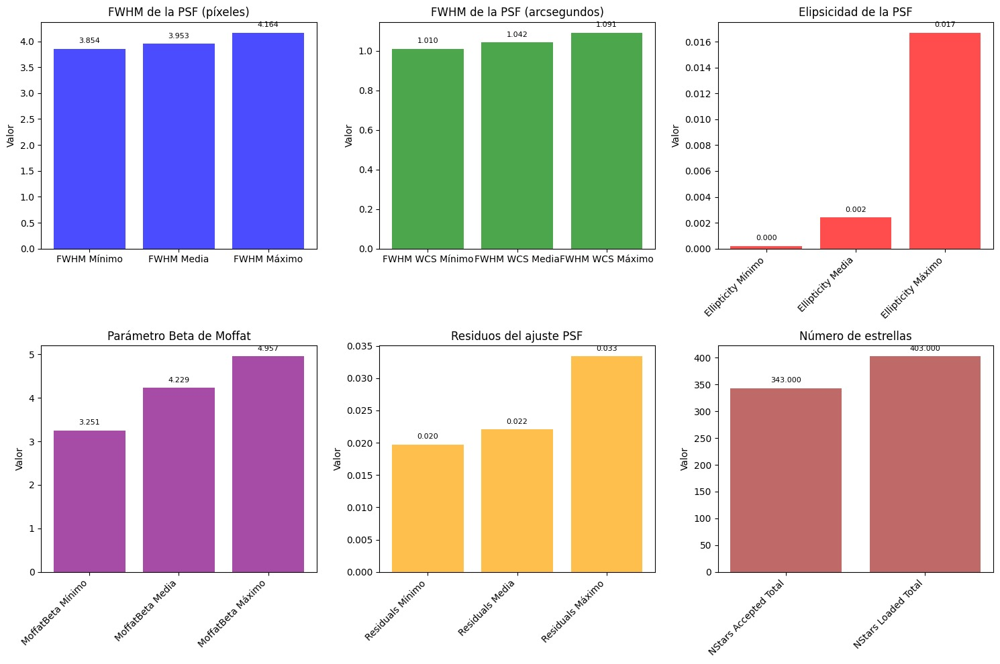
Vamos a interpretar los resultados mostrados:
FWHM (píxeles y arcosegundos):
El valor del FWHM esta entre 3.85 y 4.16, con una media de 3.95, equivalente a $\approx 1.01-1.09\ \text{arcsec}$ con una media de 1.04. El rango entre mínimo y máximo es pequeño (8%) lo que nos indicaría que el seeing/PSF es bastante homogéneo entre las estrellas usadas.
Elipticidad:
Tenemos un mínimo de 0, media de 0.002 y un máximo de 0.017, recordemos que una elipticidad de 0 significa que la PSF es perfectamente circular, tenemos una media de 0.002 y un máximo de apenas 0.017 que indica que las estrellas son muy circulares y consistentes.
Parámetro beta de Moffat:
Tenemos un mínimo de 3.25, una media de 4.23 y un máximo de 4.96, este parámetro describe qué tan "pesadas" son las alas del perfil PSF. Valores de $\beta$ entre 3 y 5 son típicos y físicamente razonables para PSFs.
Residuos del ajuste PSF:
Aquí tenemos un mínimo de 0.020, una media de 0.022 y un máximo de 0.033. Esta es la métrica más importante para juzgar la calidad del ajuste, si se tienen valores bajos y con poca dispersión indican que el modelo ajusta consistentemente bien a casi todas las estrellas.
Número de estrellas:
Tenemos que PSFEx cargó 403 fuentes candidatas del catálogo, pero solo aceptó 342 (un 85%) para construir el modelo final, descartando 60 (un 15%) por no cumplir los criterios de selección.
Con estos resultados obtenidos parece que el modelo de PSF obtenido es bueno para comenzar a usarlo con SExtractor, pero también tenemos las imagenes de chequeo que pedimos a PSFEx (CHI,PROTOTYPES,SAMPLES,RESIDUALS,SNAPSHOTS).
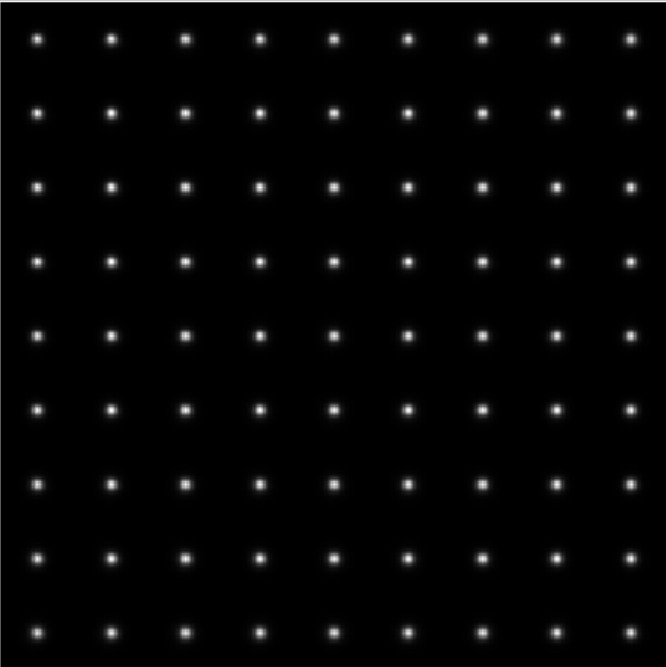
SNAPSHOTS, muestra una colección de que PSFEx seleccionó para construir el modelo de la PSF.
En la figura anterior podemos observar distintos recuadros con estrellas, cada uno corresponde a una estrella extraída del catálogo generado por SExtractor. Podemos observar que las estrellas estan bien centradas y tienen una forma similar entre sí.
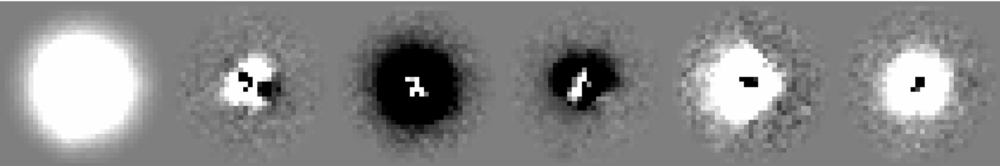
En la figura anterior podemos observar la imagen de chequeo PROTOTYPES, como ya se explico antes, PSFEx no guarda un solo PSF fijo, sino una base de 6 imágenes que, combinadas con un polinomio de grado 2 en X_IMAGE, Y_IMAGE permiten reconstruir el PSF en cualquier posición del campo de la imagen. Estos prototipos permiten describir cómo cambia la PSF a lo largo de la imagen.
Para complementar, podemos verificar la distribución de estrellas que se usaron para el modelo de la PSF, para ello debemos activar el catálogo de salida de PSFEx, esto se hace modificando los siguientes parámetros en el archivo de configuración de PSFEx:
OUTCAT_TYPE FITS_LDAC
OUTCAT_NAME psfex_accepted.cat
Esto nos genera el catálogo con columans como X_IMAGE, Y_IMAGE, DELTAX_IMAGE, DELTAY_IMAGE, FLAGS_PSF, etc. Así, generamos un archivo de regiones con ayuda de python para visualizar las estrellas aceptadas y las estrellas rechazadas.
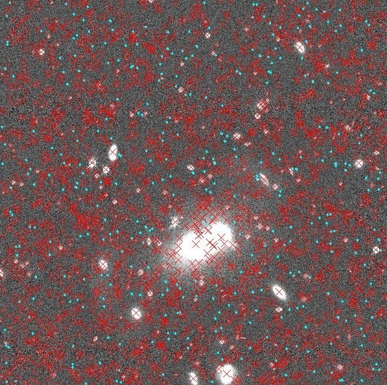
En la figura anterior podemos observar que PSFEx tomo una distribución espacial aleatoria en el campo de la imagen, es decir, no tomo estrellas concentradas en una sola región. Esto es muy importante, ya que la PSF no es igual para estrellas que estan en una esquina de la imagen a las que estan en el centro de la misma.
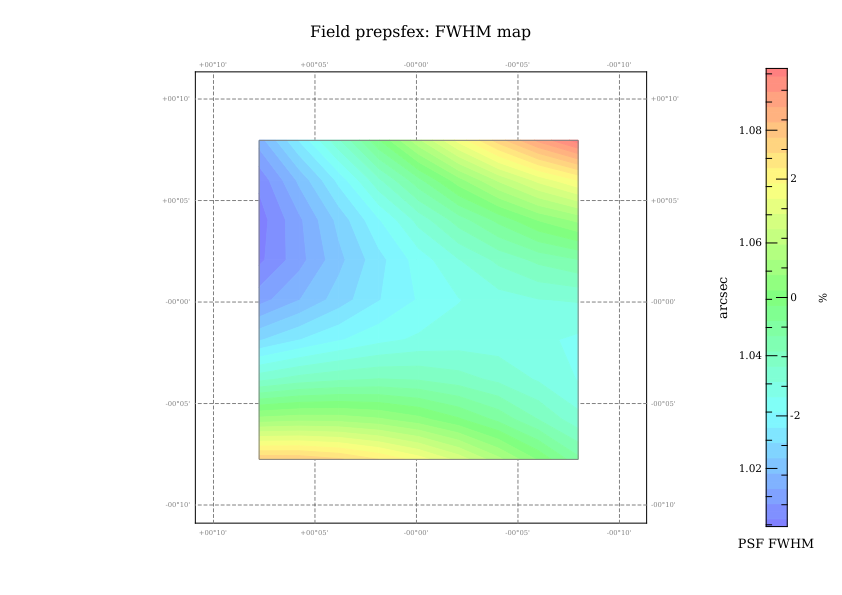

En los gráficos anteriores podemos observar la distribución de FWHM y la elipticidad, el mapa de FWHM nos permite visualizar como cambia el ancho de la PSF a lo largo de la imagen, las áreas que tienen colores consistentes indican que el ancho de la PSF es estable en esa región, mientras que las áreas con cambios de color indican que hay cambios en el tamaño de la PSF. El mapa de elipticidad nos permite ver como cambia la forma de la PSF a lo largo de la imagen,
SExtractor + PSFEx: Clasificación estrella/galaxia
Después de haber generado el modelo del PSF, el siguiente paso es reinyectarlo a SExtractor para medir y obtener parámetros que dependen explícitamente de la forma de la PSF. SExtractor tiene dos enfoques para hacer esto: [1] [2]
-
CLASS_STAR: Este clasificador se basa en una red neuronal multicapa de propagación directa entrenada a traves de aprendizaje supervisado, usa perfil de brillo, FWHM, y pico de intensidad. Funciona bien pero se degrada en el límite de baja SNR -
SPREAD_MODEL: Compara el ajuste de un modelo de fuente puntual contra un modelo ligeramente extendido. Este es el estándar actual precisamente porque requiere del modelo PSF
El estimador SPREAD_MODEL indica cual de los modelos que mejor se ajustan coincide mejor con los datos de a imagen, ya sea el modelo de PSF local remuestreado en la posición actual $\tilde{\phi}$ (representando una fuente puntual) o un modelo remuestreado ligeramente más "borroso" $\tilde{G}$ (representando una galaxia). Aquí $\tilde{G}$ se obtiene convolucionando el modelo de PSF local con un modelo exponencial circular con una longitud de escala $=1/16\ \text{FWHM}$, y remuestreando el resultado en la posición actual en la cuadrícula de píxeles. [1][2]
SPREAD_MODEL se normaliza para que la comparación de fuentes con diferentes PSF sea más práctica y coincidan:
donde $p$ es el vector de imagen centrado en la fuente. $W$ es una matriz de pesos constante a lo largo de la diagonal.
El valor que se obtiene de SPREAD_MODEL nos dice que tipo de fuente es, para fuentes puntuales SPREAD_MODEL toma valores cercanos a cero, positivos para fuentes extendidas y negativo para detecciones más pequeñas que la PSF. Ahora vamos a hacer uso de estos estimadores, como siempre, empezaremos creando un directorio nuevo en donde pondremos todos los elementos que hemos venido ocupando para usar SExtractor pero ahora agregaremos el archivo .psf que nos dió PSFEx y en el archivo de configuración principal de SExtractor vamos a colocar lo siguiente:
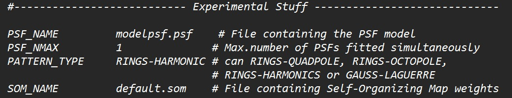
Y en el archivo de parámetros vamos a colocar los siguientes parámetros:
CLASS_STAR
SPREAD_MODEL
SPREADERR_MODEL
FLUX_RADIUS
FWHM_IMAGE
MAG_AUTO
MAGERR_AUTO
MAG_PSF
MAGERR_PSF
FLUX_AUTO
FLUXERR_AUTO
MU_MAX
FLAGS
SNR_WINY finalmente corremos SExtractor con el siguiente comando:
$ sex IMAGEN.fits -c pospsfex.sex 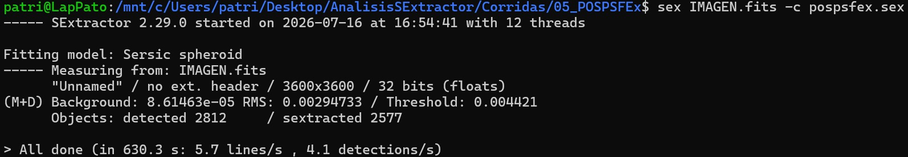
Esto nos genera nuestro catálogo con los parámetros que le solicitamos a SExtractor, vamos a visualizar los datos del catálogo obtenido para la clasificación estrella/galaxia, esto lo haremos empleando Python, vamos a convertir nuestro catálogo FITS_LDAC a un DataFrame con pandas. Luego, revisamos los datos obtenidos con el clasificador SPREAD_MODEL, para ello vamos a determinar un umbral para elegir nuestras estrellas, aquí debemos tomar en cuenta que SPREAD_MODEL tiene una incertidumbre (SPREADERR_MODEL) y no es la misma para todas las mediciones, por ello el umbral será determinado por:
$$|\text{SPREAD_MODEL}|< 0.002 + \text{SPREADERR_MODEL}$$
por ejemplo si tomamos los datos del primer elemento en nuestro DataFrame: Se obtuvo un SPREAD_MODEL: 0.026486, SPREADERR_MODEL: 0.000007, por lo que: $|0.026486|< 0.002 + (0.000007)= 0.002007 \Longrightarrow 0.026486 > 0.002007$, por lo que este primer objeto no es considerado una estrella, vamos a ubicarlo en nuestra imagen:
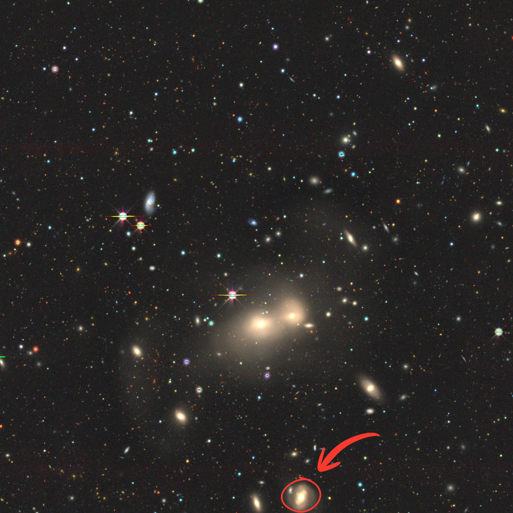
Al ubicarlo en la imagen podemos darnos cuenta que, efectivamente, el objeto no es una estrella sino una galaxia que parece ser del tipo S0. Ahora vamos a ver la distribución de los datos de SPREAD_MODEL en función de MAG_AUTO.
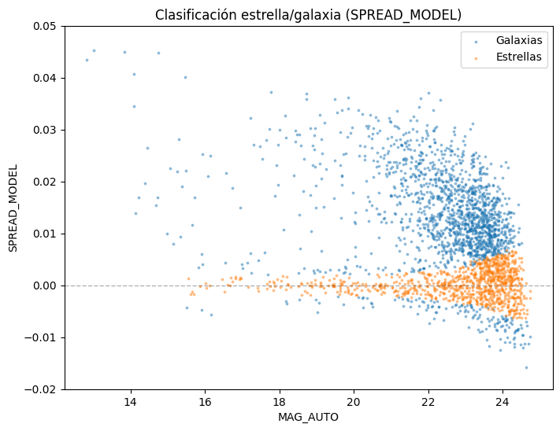
SPREAD_MODEL en función de MAG_AUTO, las estrellas rondan cerca de 0.
Notemos que existe una clara separación entre estrellas y galaxias (recordemos que para SPREAD_MODEL un valor cercano a 0 significa que es estrella), con las estrellas concentrandose alrededor de SPREAD_MODEL=0 y las galaxias con valores positivos. Para objetos brillantes la separación entre ambas poblaciones es clara; sin embargo, conforme aumenta la magnitud (objetos más débiles) la disperción de SPREAD_MODEL crece como consecuencia de la disminución de la relación señal-ruido.

SPREADERR_MODEL) en función de la magnitud (MAG_AUTO). Para objetos brillantes entre 14 a 18 el error es casi constante, mientras que para objetos más débiles el error empieza a aumentar.
Recordemos que SPREAD_MODEL compara la forma del objeto con la forma esperada de la PSF, cuando una estrella es brillante puede medirse con mucha precisión, mientras que si tenemos una estrella muy débil, el ruido puede modificar algunos valores de los píxeles, por lo que es más difícil saber cual es exactamente su perfil.
Ahora, veamos los datos obtenidos para el clasificador CLASS_STAR, recordemos que este parámetro toma un valor de 0 para objetos que parecen ser como una galaxia y 1 si es una estrella. De igual forma que con el modelo SPREAD_MODEL, tomaremos un umbral para elegir nuestras estrellas, estre umbral sera: $\text{es_estrella}>0.9$. Tomando el ejemplo anterior, el primer elemento del catálogo tiene un valor de CLASS_STAR=0.028627, tiene un valor cercano a 0 por lo que se considera una galaxia y como ya vimos, si es una galaxia.
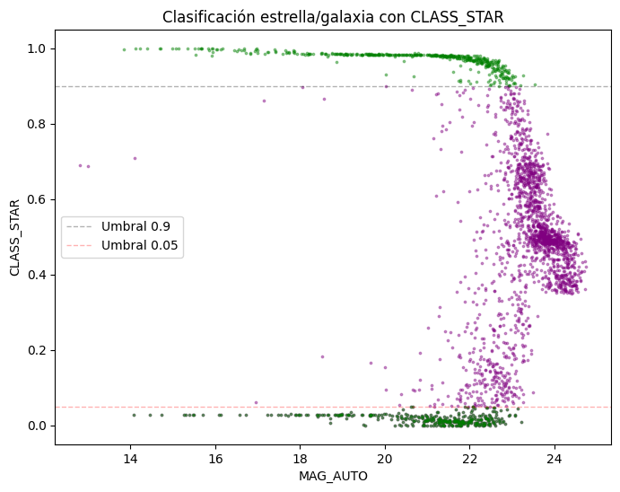
CLASS_STAR en función de la magnitud, tomando estrellas para valores mayores a 0.9 y galaxias para valores menores a 0.05
De esta grafica podemos notar algo similar que usando SPREAD_MODEL, para objetos brillantes las estrellas presentan valores cercanos a 1, mientras que las galaxias se concentran al rededor de 0; sin embrago, conforme aumenta la magnitud y los objetos se vuelven más débiles, la relación señal-ruido disminuye y la red neuronal de SExtractor asigna valores cada vez más intermedios, como resultado crece el número de objetos cuya clasificación es ambigua.
Imagen de ejemplo de Subaru Suprime-Cam
Para este ejemplo vamos a emplear la siguiente imagen FITS, esta es un mosaico apilado usando SWarp hecho con datos de Subaru Suprime-Cam
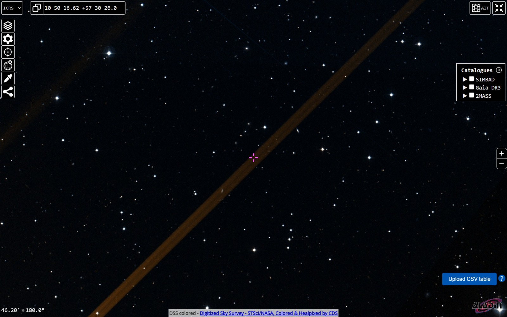
Empezamos, al igual que antes, por leer el header de la imagen FITS para obtener información que nos sea útil.
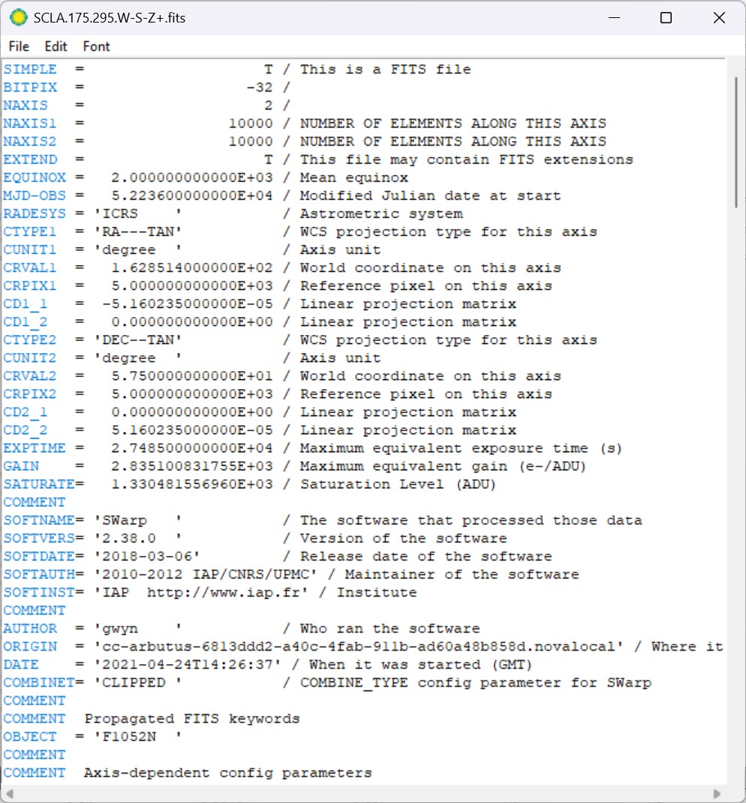
GAIN, SATUR_LEVEL, PIXEL_SCALE y SEEING_FWHM
De aquí obtenemos los siguientes datos para usarlos en nuestro archivo de configuración principal de SExtractor:
GAIN |
2835 |
|---|---|
SATUR_LEVEL |
1330 |
| PIXEL_SCALE | $5.160235\times 10^{-5}\times 3600 \approx 0.186\ \text{arcsec/pixel}$ |
SEEING_FWHM |
0.789 |
Ahora, vamos a determinar que filtro de convolución vamos a emplear, esto lo hacemos al igual que con la imagen anterior del Legacy survey:
$$ FWHM_{pix}=\frac{0.789}{0.186}\approx 4.2 $$
Con esta escala del FWHM en píxeles podemos determinar que el filtro conveniente a usar es gauss_3.0_5x5.conv, ya con estos parámetros iniciales modificados podemos empezar a determinar el background, para ello usaremos los parámetros que están por defecto (BACK_SIZE=64 y BACK_FILTERSIZE=3) y pedimos las imagenes de chequeo BACKGROUND, -BACKGROUND.

-BACKGROUND (der), podemos notar como algunos objetos perdieron algo de brillo.
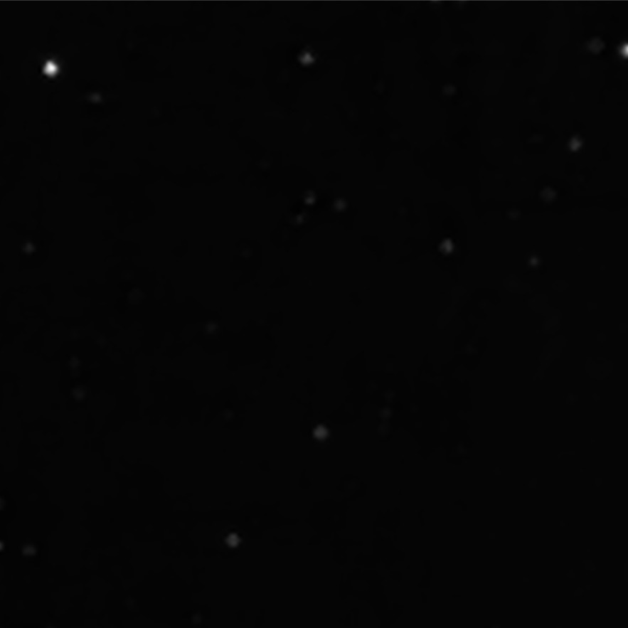
BACKGROUND)
En la figura anterior podemos observar algunas estrellas que parecen ser estrellas saturadas, sin embargo, el resto de la imagen parece estar bien, por lo que podemos continuar con el análisis de la imagen con los parámetros por defecto. Posteriormente, vamos a determinar los valores de umbralización que utilizará SExtractor, los parámetros DETECT_THRESH y ANALYSIS_THRESH estarán en un valor de 1.5, y el parámetro DETECT_MINAREA tomaremos distintos valores (3,5,7,10,12,15) para ver como cambia el número de objetos detectados. Además, pediremos una imagen de chequeo APERTURES.
DETECT_MINAREA |
Objetos detectados | Objetos extraídos |
|---|---|---|
| 3 | 98261 | 85947 |
| 5 | 92334 | 81911 |
| 7 | 87856 | 78674 |
| 10 | 81917 | 73842 |
| 12 | 78568 | 71028 |
| 15 | 73911 | 67043 |
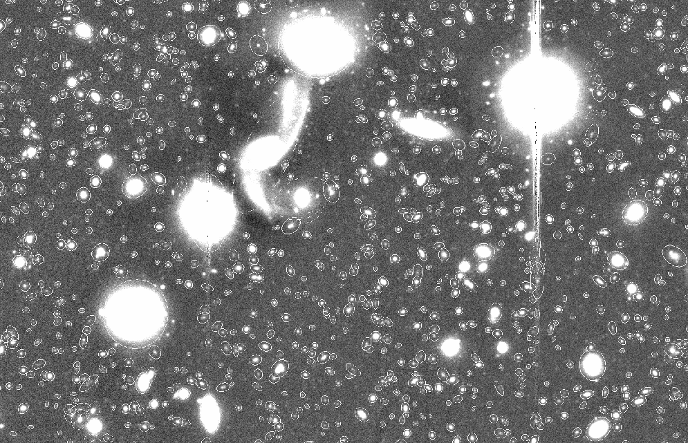


APERTURES con distintos valores de DETECT_MINAREA, a) 3, b) 5, c) 7, d) 10, e) 12, f) 15. Podemos notar que conforme aumenta el valor de DETECT_MINAREA el número de objetos detectados disminuye.
APERTURES, a la izquierda con DETECT_MINAREA=3 y a la derecha con DETECT_MINAREA=15.
Como se hablo para el ejemplo con la imagen anterior, el valor que eliges para estos parámetros depende de los objetos que se quieran observar, para este caso tomaremos el valor de DETECT_MINAREA=5, con esto podemos pasar con la parte de separación de fuentes deblending, para ello vamos a modificar los parámetros DEBLEND_NTHRESH y DEBLEND_MINCONT
Referencias
- SExtractor User Manual — SExtractor 2.24.2 documentation. (n.d.). https://sextractor.readthedocs.io/en/latest/index.html
- Holwerda, B. W. (2005). Source Extractor for dummies: Everything you wanted to know about Source Extractor and I was forced to find out. Space Telescope Science Institute. https://arxiv.org/abs/astro-ph/0512139
- Bertin, E., & Arnouts, S. (1996). SExtractor: Software for source extraction. Astronomy And Astrophysics Supplement Series, 117(2), 393-404. https://doi.org/10.1051/aas:1996164
- Escudero, C. G. (s. f.). <.>Astronomía extragaláctica: Source Extractor. FCAGLP.
- Marcatelli, C. (2018). Astrometric and photometric characterization of the PRISMA fish-eye cameras for meteor observations [Tesis de maestría, Università di Bologna]. AMS Laurea. https://amslaurea.unibo.it/id/eprint/15801/1/Camilla_Marcatelli.pdf
- Da Costa, G. S. (1992). Basic photometry techniques. En S. B. Howell (Ed.), Astronomical CCD observing and reduction techniques (Vol. 23, pp. 90-104). Astronomical Society of the Pacific. https://www.aspbooks.org/publications/23/90.pdf
- HST Tutorial videos. (n.d.). STScI. https://www.stsci.edu/hst/documentation/hst-tutorial-videos
- Dey, A., Schlegel, D. J., Lang, D., Blum, R., Burleigh, K., Fan, X., Findlay, J. R., Finkbeiner, D., Herrera, D., Juneau, S., Landriau, M., Levi, M., McGreer, I., Meisner, A., Myers, A. D., Moustakas, J., Nugent, P., Patej, A., Schlafly, E. F., . . . Zhou, Z. (2019). Overview of the DESI legacy imaging surveys. The Astronomical Journal, 157, Artículo 168. https://doi.org/10.3847/1538-3881/ab089d
- PSFEx User Manual — PSFEx 3.18.2 documentation. (n.d.). https://psfex.readthedocs.io/en/latest/
- DeepWiki. (2025, May 10).PSFEX Overview. DeepWiki. https://deepwiki.com/astromatic/psfex/1-psfex-overview
- DeepWiki. (2025, May 10). Check plots. DeepWiki. https://deepwiki.com/astromatic/psfex/5.1-check-plots